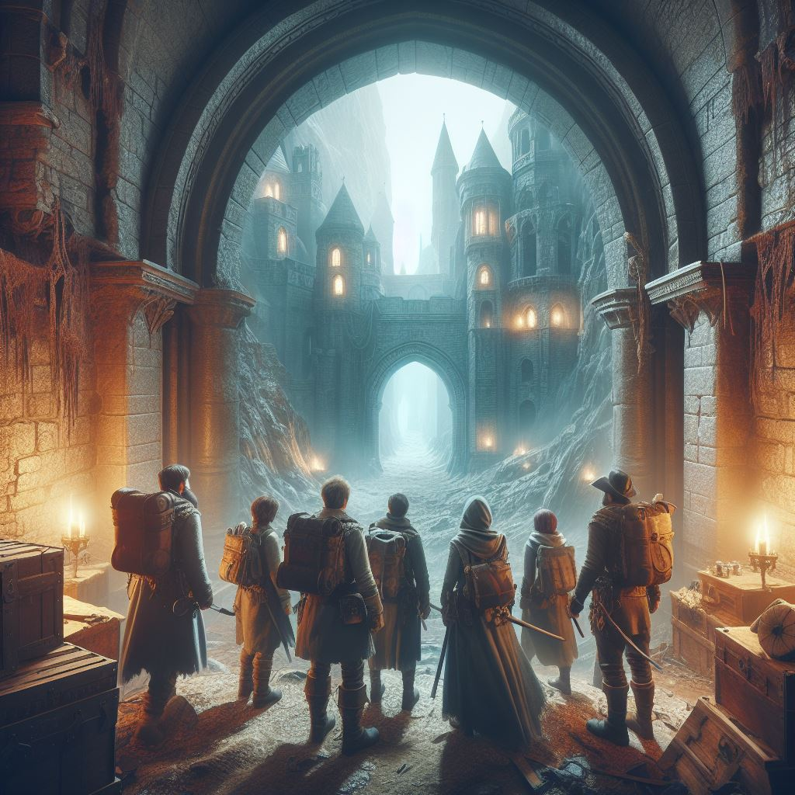

The souls of the Steel Knights
TSTSK ou SSK, é um sistema de RPG de mesa focado em lutas.
Nesse sistema, os jogadores se encontram em uma Dungeon, uma masmorra, e seus objetivos são dar um jeito de sair de lá.

Imagem meramente demonstrativa
O sistema
- HP, Mana e Escudo são baseados em 1d10 por ponto.
- O mínimo de HP de um personagem é 1 ponto, se não você nascera morto
- Todos os personagens tem uma Mana base, essa serve para a utilização de Habilidades Especiais
- O Escudo é perdido por partes, e regenerado a cada 2 rodadas.
- ATK é dano por pancada.
- PDF ou Poder De Fogo, é todo e qualquer ataque a longa distância
O sistema do SSK utiliza dod dados D20, D12, D10,D8 e D6